Knot, Hopf Algebra and Quantum Invariants
关键词： framed link；Kirby calculus；ribbon Hopf algebra；ribbon category；modular category；Reshetikhin–Turaev invariant
1 引言
Jones polynomial 的发现把 knot theory、Lie theory 与 quantum groups 联系起来。Reshetikhin 与 Turaev 的工作进一步说明，这种联系并不止于 S^3 中的 link invariants：在合适的 root of unity 情形下，quantum group 的表示论还可以通过 surgery presentation 产生 closed oriented 3-manifold 的拓扑不变量 （Reshetikhin–Turaev 1991）。Turaev 后来的系统表述则把这种构造放入 ribbon category 与 modular category 的框架中 （Turaev 1994）。
本文按照”几何侧、代数侧、三维流形不变量”的顺序组织。几何侧解释为什么 framed link 足以描述 closed oriented 3-manifold；代数侧解释 Hopf algebra 的结构如何对应 tangle diagram 的局部构件；最后说明 modular data 如何保证由 link invariant 写出的 surgery expression 对 Kirby moves 不变。
本文采用如下约定。三维流形均为 closed oriented 3-manifold；link 默认嵌入 S^3 中；从 Hopf algebra 出发时，表示范畴默认取有限秩表示。我们只讨论半单（或经 purification 后半单）的 modular category 构造，不涉及非半单的 Hennings、Lyubashenko 或 modified trace 型推广。
记号大体沿用 Turaev 1994 年的教材 （Turaev 1994）（以下简称 T94）。
2 Framed link 与 closed 3-manifold 的几何来源
2.1 Framing 与 writhe 的关系
设 L 是 S^3 中的 oriented link。一个 framing 是 L 的法丛的一个平凡化，也就是沿每个分量取一个处处非零的法向量场并考虑其同伦类。对 S^3 中的 oriented knot 而言，framing 可以用一个整数记录；这个整数可理解为给定 framing longitude 与 Seifert longitude 的差。
在图示计算中，经常把 framing 转换成 writhe 的信息。具体地说，给定一个 link diagram D，blackboard framing 把每条线段加厚为贴近平面的 ribbon。此时 framing 由图中的 twisting 反映出来；给 diagram 加一个正 curl 或负 curl 会使 writhe 改变 \pm 1，同时也改变 blackboard framing。因而，在采用 blackboard framing 的约定下，可以用 writhe 来代表 framing，并把 framed link 视为 ribbon link 的平面图示。
这一点解释了为什么 RT 构造自然使用 framed link 而不是普通 link：ribbon category 中的 twist 正是代数侧记录 framing 的结构。
2.2 四维 handlebody 视角
本文把四维 handlebody 视角作为 framed link 出现的主要几何来源。令 B^4 是四维球，且 \partial B^4=S^3。若 L=L_1\cup\cdots\cup L_m 是 \partial B^4 中的 link，并给每个分量 L_i 指定一个整数 framing n_i，则可以沿 L 的各分量附加 2-handles，得到四维 2-handlebody W_L=B^4\cup_L\bigcup_i(D^2\times D^2). 这里每个 attaching map 的 framing 决定了 \partial D^2\times D^2 如何贴到 \partial B^4 的 tubular neighborhood 上。所得四维流形的边界 \partial W_L 是一个 closed oriented 3-manifold。
通常也把 \partial W_L 说成由 S^3 沿 framed link L 做 integer Dehn surgery 得到的三维流形，并记为 M_L=S^3_L(n_1,\ldots,n_m)=\partial W_L. 本文不需要把 Dehn surgery 作为独立定义；只需记住它与上述 2-handle attachment 的边界描述等价。
定理 1 (Lickorish–Wallace surgery theorem). 任意 closed connected oriented 3-manifold M 都有一个 integer surgery presentation：存在 S^3 中的 link L=L_1\cup\cdots\cup L_m 以及整数 framings n_1,\ldots,n_m，使得 M\cong S^3_L(n_1,\ldots,n_m). 等价地，任意 closed connected oriented 3-manifold 都可由 S^3 中某个 framed link 的 integer surgery 得到。
定理 2 (Rohlin cobordism theorem). 任意 closed oriented 3-manifold M 都是某个 compact oriented 4-manifold W 的边界： \partial W=M. 换言之，oriented cobordism group \Omega^{SO}_3 为 0。进一步地，我们可以要求 W 由 B^4 附加 2-handles 得到，即 W=W_L。
上面两个定理是等价的。因此，若要构造 closed oriented 3-manifold invariant，可以从 framed link 出发。但 framed link 表示并不唯一，因此还需要处理不同 handle diagrams 之间的等价关系。
2.3 Kirby calculus
Kirby calculus 描述了不同 framed links 何时给出同一个三维流形。它的几何含义是：改变四维 handle decomposition 的方式不应改变其边界三维流形。
定理 3 (Kirby calculus). 设 L 与 L' 是 S^3 中的 framed links。则 M_L 与 M_{L'} orientation-preservingly homeomorphic 当且仅当 L 与 L' 可通过有限次 framed isotopy、handle slides 以及 \pm 1-framed unknot 的加入或删除相互变换。
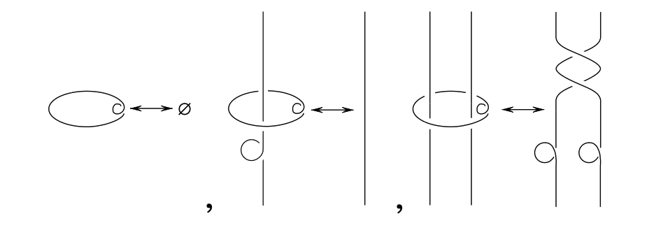
在 link diagram 中，handle slide 表现为一个分量沿另一分量做 band sum；\pm 1 move 表现为加入或删除一个与其余分量不交的 \pm 1-framed unknot。Turaev 在 RT 构造中使用的是等价版本的 Kirby moves。无论采用哪一套生成元，结论都是：若一个由 surgery link 写出的数量要成为三维流形不变量，它必须在 Kirby moves 下保持不变。
3 Ribbon category 与 graphical calculus
3.1 Ribbon category 的定义
为了把 framed link diagram 转化成线性代数，需要一个能够解释 crossing、cup、cap 与 twist 的范畴结构。我们分几步来搭：先是 monoidal category，再加上 braiding 和 duality，最后把它们合起来得到 ribbon category。
定义 4 (strict monoidal category). 本节采用 strict 约定。一个 strict monoidal category \mathcal C 带有 bifunctor \otimes:\mathcal C\times\mathcal C\to\mathcal C 和单位对象 \mathbf 1，满足 (U\otimes V)\otimes W=U\otimes(V\otimes W),\qquad \mathbf 1\otimes V=V=V\otimes\mathbf 1. 一般非 strict 的情形中，上式应改为 associativity 与 unit constraints；Mac Lane coherence 允许我们在图示计算中按 strict 情形书写。
定义 5 (braiding). 设 \mathcal C 是 strict monoidal category。一个 braiding 是一族对对象 V,W 自然的同构 c=\{c_{V,W}:V\otimes W\longrightarrow W\otimes V\}_{V,W\in\mathcal C}, 满足两条 hexagon identity： c_{U,V\otimes W} = (\operatorname{id}_V\otimes c_{U,W})\circ(c_{U,V}\otimes\operatorname{id}_W), c_{U\otimes V,W} = (c_{U,W}\otimes\operatorname{id}_V)\circ(\operatorname{id}_U\otimes c_{V,W}), 以及自然性：对任意 f:V\to V' 与 g:W\to W'， (g\otimes f)\circ c_{V,W} = c_{V',W'}\circ(f\otimes g). 配有 braiding 的 monoidal category 称为 braided monoidal category。
由定义立刻能得到两条常用事实。其一，在两条 hexagon identity 中取 V=W=\mathbf 1 以及 U=V=\mathbf 1，再用 c 的可逆性，就有 c_{V,\mathbf 1}=c_{\mathbf 1,V}=\operatorname{id}_V. 其二，这些公理蕴含 Yang–Baxter（braid relation）恒等式 (\operatorname{id}_W\otimes c_{U,V})\circ(c_{U,W}\otimes\operatorname{id}_V)\circ(\operatorname{id}_U\otimes c_{V,W}) = (c_{V,W}\otimes\operatorname{id}_U)\circ(\operatorname{id}_V\otimes c_{U,W})\circ(c_{U,V}\otimes\operatorname{id}_W). 直观上，c_{V,W} 是把 V-colored strand 从 W-colored strand 上方穿过去的代数解释：两条 hexagon identity 保证 crossing 与张量积相容，而 Yang–Baxter 恒等式在图示上正好是三条 strand 的 Reidemeister III 同痕（见后面的 graphical calculus 一节）。
定义 6 (duality / rigid structure). 设 \mathcal C 是 strict monoidal category。这里说的 duality，是给每个对象 V 指定一个对象 V^* 以及两个态射 b_V:\mathbf 1\to V\otimes V^*, \qquad d_V:V^*\otimes V\to\mathbf 1, 满足 zig-zag identities (\operatorname{id}_V\otimes d_V)\circ(b_V\otimes\operatorname{id}_V)=\operatorname{id}_V, (d_V\otimes\operatorname{id}_{V^*})\circ(\operatorname{id}_{V^*}\otimes b_V)=\operatorname{id}_{V^*}. 这里 b_V 是 coevaluation，d_V 是 evaluation。具有这种 duality 的 monoidal category 常称为 rigid category。注意此处并不预先要求 (V^*)^*=V；在 ribbon category 中，这一点会由兼容性给出一个 canonical identification。
定义 7 (ribbon category). 一个 ribbon category 是一个 monoidal category \mathcal C，配有 braiding c、twist \theta 以及与它们相容的 duality (\,^*,b,d)。其中 twist 是一族自然同构 \theta_V:V\to V, 满足 \theta_{V\otimes W} = c_{W,V}\circ c_{V,W}\circ(\theta_V\otimes\theta_W). duality 与 braiding、twist 之间的兼容性则要求 (\theta_V\otimes\operatorname{id}_{V^*})\circ b_V = (\operatorname{id}_V\otimes\theta_{V^*})\circ b_V, 也就是常写成的 \theta_{V^*}=(\theta_V)^*。因此，ribbon category 正是能够同时解释 crossing、cup/cap 和 framing twist 的范畴结构。
3.2 Colored ribbon graph
定义 8 (colored ribbon graph). 设 \mathcal C 是一个 ribbon category。一个 ribbon graph 是三维流形中的紧定向曲面，分解为有限个 directed bands、directed annuli 和 coupons：bands 可看作加厚的有向边，annuli 可看作加厚的闭边，coupons 是带有若干输入、输出边的矩形节点。一个 \mathcal C-colored ribbon graph 是一个 ribbon graph，并附加如下标签：
每条 directed band 或 annulus 标以 \mathcal C 中的一个对象 V；若方向反转，则颜色改为对偶对象 V^*；
每个 coupon 标以 \mathcal C 中的一个 morphism，其 source 和 target 分别由 coupon 下方、上方边界上相遇的 colored strands 的张量积给出；
isotopy 必须保持 ribbon graph 的分解、方向和 colors。
普通的 colored framed link 是最简单的例子：它没有 coupons，每个 link component 被加厚为一个 annulus，并标以某个对象 V\in\mathcal C。framing 被 annulus 的嵌入方式记录；这就是为什么 RT 构造自然处理 framed links 而不是 unframed links。
3.3 Graphical calculus
Graphical calculus 指的是把 colored ribbon graph 的平面图示系统地翻译成 \mathcal C 中 morphisms 的规则。具体地，先把图示切成局部生成元，再把它们替换为范畴中的结构态射： \begin{array}{c|c} \text{图示局部构件} & \text{范畴解释}\\ \hline \text{identity strand} & \operatorname{id}_V\\ \text{positive/negative crossing} & c_{V,W}\text{ 或 }c_{V,W}^{-1}\\ \text{cup/cap} & \text{coevaluation/evaluation}\\ \text{positive/negative twist} & \theta_V\text{ 或 }\theta_V^{-1}\\ \text{coupon} & \text{coupon 上标记的 morphism} \end{array}
这些规则可以用下面几张图来读。一个带标签的 coupon 表示一个 morphism；多输入、多输出的 coupon 表示一般 morphism f:V_1\otimes\cdots\otimes V_m\longrightarrow W_1\otimes\cdots\otimes W_n. 图元上下连接对应 morphism 的复合，并列放置对应 tensor product。
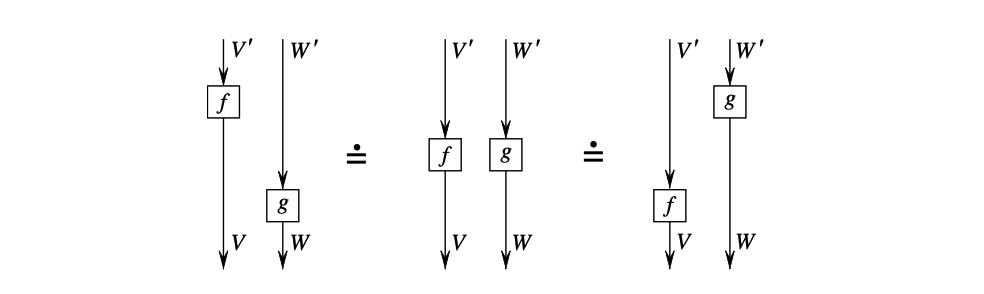
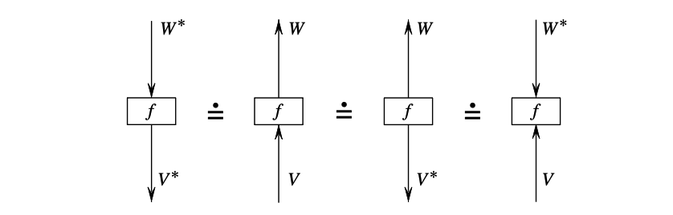
braiding 与 twist 是 framed link 图示中最重要的两个局部操作。Crossing 被读成 c_{V,W} 或 c_{V,W}^{-1}；一圈正负 twist 被读成 \theta_V 或 \theta_V^{-1}。因此，framing 的改变不是额外信息，而是已经由 ribbon category 的 twist 记录在代数中。
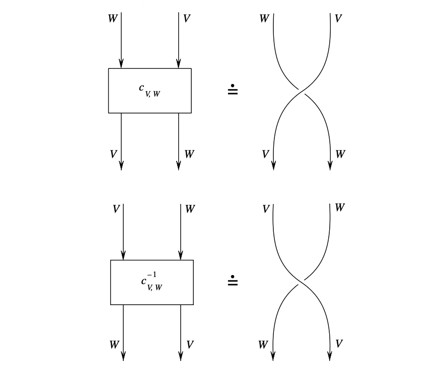
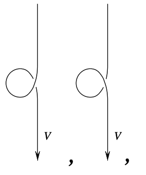
同痕变形的代数化，就是把”图可以连续拉动而不改变 isotopy class”翻译成范畴公理。比如，strand 穿过一个 tensor product 的两种画法相同，对应 braiding 的 hexagon identity c_{U,V\otimes W} = (\operatorname{id}_V\otimes c_{U,W})\circ(c_{U,V}\otimes\operatorname{id}_W). 图形上，这正是把 U 同时穿过 V\otimes W，或先穿过 V 再穿过 W，所得图示同痕。
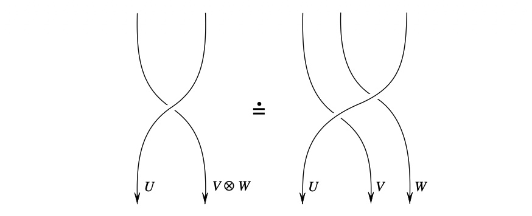
三条 strand 的 Reidemeister III 型同痕对应 Yang–Baxter identity： \begin{aligned} &(\operatorname{id}_W\otimes c_{U,V})\circ(c_{U,W}\otimes\operatorname{id}_V)\circ(\operatorname{id}_U\otimes c_{V,W})\\ &\qquad = (c_{V,W}\otimes\operatorname{id}_U)\circ(\operatorname{id}_V\otimes c_{U,W})\circ(c_{U,V}\otimes\operatorname{id}_W). \end{aligned} 这解释了为什么一个 braiding 不只是任意的交换同构，而必须满足 braid relation。
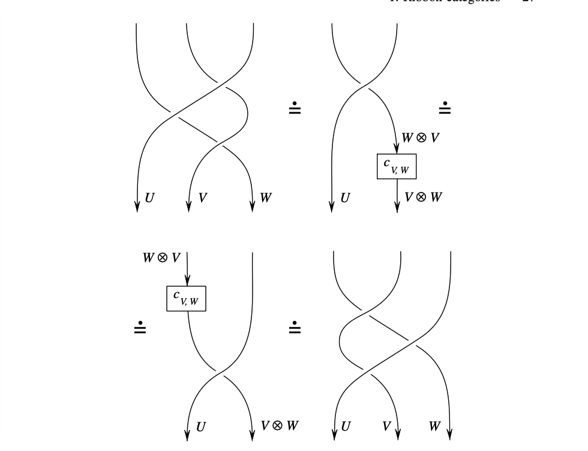
类似地，morphisms 可以沿着 crossing 滑动，这对应 braiding 的自然性： (g\otimes f)\circ c_{V,W} = c_{V',W'}\circ(f\otimes g). Cup 与 cap 的拉直则对应 duality 的 zig-zag identities： (\operatorname{id}_V\otimes d_V)\circ(b_V\otimes\operatorname{id}_V)=\operatorname{id}_V,\qquad (d_V\otimes\operatorname{id}_{V^*})\circ(\operatorname{id}_{V^*}\otimes b_V)=\operatorname{id}_{V^*}.
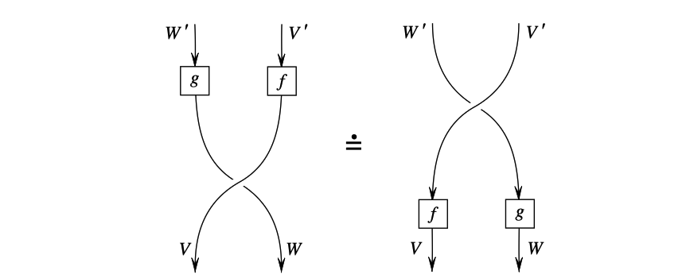
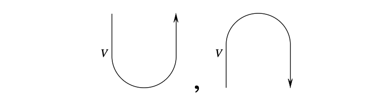
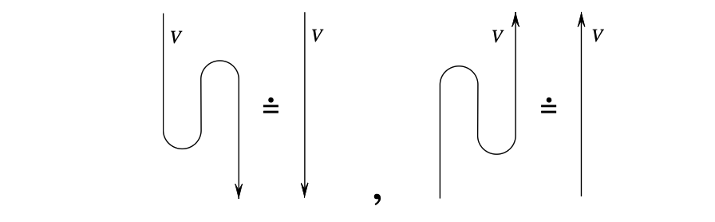
最后，把这些局部规则拼起来，就可以解释带 coupons 的 ribbon graph。ribbon category 的公理正是保证这种翻译不依赖于图示切分方式，并且在 ribbon isotopy 下保持不变的代数条件。
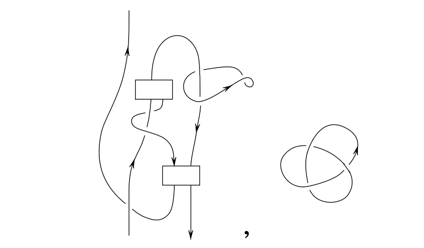
3.4 Trace 与 dimension
ribbon category 中的 trace 是一个图形化的 trace，而不是一开始就给定的矩阵 trace。设 f:V\to V 是 \mathcal C 中的 endomorphism。记 b_V:\mathbf 1\to V\otimes V^*,\qquad d_V:V^*\otimes V\to \mathbf 1 为 coevaluation 和 evaluation。Turaev 的 categorical trace 定义为 \operatorname{tr}_{\mathcal C}(f) = d_V\circ c_{V,V^*}\circ \bigl((\theta_V\circ f)\otimes \operatorname{id}_{V^*}\bigr) \circ b_V \in \operatorname{End}_{\mathcal C}(\mathbf 1). 对象 V 的 categorical dimension 定义为 \dim_{\mathcal C}(V)=\operatorname{tr}_{\mathcal C}(\operatorname{id}_V). 图形上，\operatorname{tr}_{\mathcal C}(f) 就是把一个标有 f 的 coupon 放到一条 V-colored closed ribbon 上后得到的 closed ribbon graph invariant。也就是说，若 \Omega_f 表示这个闭合图形，则 F(\Omega_f)=\operatorname{tr}_{\mathcal C}(f).
定理 9 (Turaev ribbon graph functor). 对任意 ribbon category \mathcal C，存在一个拓扑不变量函子 F，它把 \mathcal C-colored ribbon graphs 映到 \mathcal C 中的 morphisms。若 \Gamma 是 closed colored ribbon graph，则 F(\Gamma)\in \operatorname{End}_{\mathcal C}(\mathbf 1). 在 \operatorname{End}_{\mathcal C}(\mathbf 1)=K 的情形下，F(\Gamma) 是 K 值不变量。
这个定理是 graphical calculus 的严格表述。它说明，只要范畴结构满足 ribbon category 的公理，局部图元的代数解释就自动对 Reidemeister 型局部变形不变。
4 Hopf 代数如何产生 ribbon category
本节主线是：Hopf algebra A 的每一层代数结构，恰好在表示范畴 \mathrm{Rep}(A) 上诱导一层范畴结构，从而逐步把 \mathrm{Rep}(A) 提升为 ribbon category（与拓扑侧的完整对照见第 9 节）。
| A 上的结构 | \mathrm{Rep}(A) 上的结构 | 图示 |
|---|---|---|
| bialgebra：\Delta,\varepsilon | monoidal（张量积、单位） | 并列 strands |
| Hopf：antipode S | rigid / duality | cup、cap |
| quasitriangular：R-matrix | braiding c | crossing |
| ribbon：universal twist v | twist \theta | framing |
设 A 是一个 Hopf algebra，结构映射为乘法、单位、coproduct \Delta、counit \varepsilon 与 antipode S。若 V 与 W 是左 A-modules，则 V\otimes W 上的 A-作用由 \Delta 给出： a\cdot(v\otimes w) =\sum a_{(1)}v\otimes a_{(2)}w, \qquad \Delta(a)=\sum a_{(1)}\otimes a_{(2)}. 因此 \mathrm{Rep}(A) 是 monoidal category。
antipode 的作用是构造 dual modules。设 V 是有限秩左 A-module，并记 V^*=\operatorname{Hom}_K(V,K). 有两种自然的左 A-module 结构： (a\cdot f)(v)=f(S(a)v), 以及 (a\cdot f)(v)=f(S^{-1}(a)v), 其中第二个公式要求 S 可逆。第一种结构使 evaluation V^*\otimes V\to K 与 coevaluation K\to V\otimes V^* 成为 A-linear maps；第二种结构则对应另一侧的 duality。换言之，antipode 是 cup 与 cap 可以被解释为 A-linear morphisms 的代数原因。
这里的 A-linearity 可以直接检查。把 K 看成 counit 给出的平凡 A-module，即 a\cdot c=\varepsilon(a)c。令 d_V:V^*\otimes V\to K,\qquad d_V(f\otimes x)=f(x). 则 \begin{aligned} d_V\bigl(a\cdot(f\otimes x)\bigr) &=\sum d_V(a_{(1)}f\otimes a_{(2)}x)\\ &=\sum f\bigl(S(a_{(1)})a_{(2)}x\bigr) =\varepsilon(a)f(x), \end{aligned} 所以 d_V 是 A-linear。若 \{e_i\} 是 V 的一组基，\{e^i\} 是对偶基，则 b_V:K\to V\otimes V^*,\qquad b_V(1)=\delta_V=\sum_i e_i\otimes e^i 也为 A-linear。事实上，将 V\otimes V^* 识别为 \operatorname{End}_K(V) 时，\delta_V 对应 \operatorname{id}_V；而 a 作用在 \delta_V 上对应算子 z\longmapsto \sum_i e^i(S(a_{(2)})z)\,a_{(1)}e_i =\sum a_{(1)}S(a_{(2)})z =\varepsilon(a)z. 因此 a\cdot \delta_V=\varepsilon(a)\delta_V，即 b_V(a\cdot 1)=a\cdot b_V(1)。
需要注意，有限维向量空间的标准映射 j_V:V\to V^{**},\qquad j_V(x)(f)=f(x) 一般并不是 A-module isomorphism。事实上 (a\cdot j_V(x))(f) =j_V(x)(S(a)f) =f(S^2(a)x) =j_V(S^2(a)x)(f). 因此 j_V 只在 S^2=\operatorname{id} 的特殊情形下自动是 A-linear。若 A 是 ribbon Hopf algebra，则 Drinfeld element u=m(S\otimes\operatorname{id})(R_{21}) 与 universal twist v 给出与 quantum trace 相容的 pivotal element g=uv,\qquad S^2(a)=gag^{-1}. 这时真正的 A-module isomorphism V\to V^{**} 是 p_V(x)(f)=f(gx)=j_V(gx)(f). 因为 \begin{aligned} (a\cdot p_V(x))(f) &=p_V(x)(S(a)f) =f(S^2(a)gx)\\ &=f(gax) =p_V(ax)(f). \end{aligned} 这也解释了为什么 quantum trace 中会出现同一个因子 g=uv。（有些文献把 r=v^{-1} 称为 ribbon element，于是同一个因子写成 ur^{-1}；为避免来回切换，下文一律用 v。）
左对偶与右对偶的差别来自 evaluation/coevaluation 放在 V 的哪一侧。在一般刚性 monoidal category 中，左对偶和右对偶不必相同；在 ribbon Hopf algebra 的表示范畴中，由于 ribbon 结构给出 compatible pivotal structure，左右对偶被系统地联系起来。这就是 framed oriented tangle 中方向反转与对偶颜色可以一致处理的原因。
定义 10 (quasitriangular Hopf algebra). 一个 quasitriangular Hopf algebra 是一个 Hopf algebra A，配有可逆元 R=\sum R^{(1)}\otimes R^{(2)}\in A\otimes A, 称为 universal R-matrix，使得 R\Delta(a)R^{-1}=\Delta^{\operatorname{op}}(a), 并且 (\Delta\otimes\operatorname{id})(R)=R_{13}R_{23}, \qquad (\operatorname{id}\otimes\Delta)(R)=R_{13}R_{12}. 这些恒等式保证 R 与 coproduct 相容，并推出 Yang–Baxter equation。
若 V,W 是 A-modules，则 R 定义 braiding c_{V,W} =P\circ(\rho_V\otimes\rho_W)(R):V\otimes W\to W\otimes V, 其中 P 是交换两个张量因子的 flip。Yang–Baxter equation 正是 braid relations 的代数形式。因此 universal R-matrix 是 crossing 的代数来源。
定义 11 (ribbon Hopf algebra). 一个 ribbon Hopf algebra 是 quasitriangular Hopf algebra (A,R)，再配有 central invertible element v\in A，Turaev 称之为 universal twist，使它满足 \Delta(v)=R_{21}R(v\otimes v),\qquad S(v)=v,\qquad \varepsilon(v)=1, 其中 R_{21}=P_A(R) 是交换两个张量因子后的 R-matrix。如前所述，文献里也常把 v^{-1} 称为 ribbon element，那时上面的 coproduct 公式会带一个 (R_{21}R)^{-1} 因子。
命题 12. 若 A 是 ribbon Hopf algebra，则有限维表示范畴 \mathrm{Rep}_{\mathrm{fd}}(A) 是 ribbon category。其 braiding 由 universal R-matrix 给出，twist 则由 universal twist 的作用给出： \theta_V=\rho_V(v):V\to V.
这说明 Hopf algebra 并不是直接”描述 framed link”，而是通过其表示范畴给出 ribbon category，再由 Turaev 的 graphical calculus 得到 colored framed link invariant。
现在可以解释几种 trace 的关系。普通 trace \operatorname{Tr}_V 是有限维向量空间 V 上线性算子的矩阵 trace。quantum trace 则是先用 ribbon Hopf algebra 的 canonical element 把 ordinary trace 修正一下、再取 trace： \operatorname{tr}_q(f) = \operatorname{Tr}_V\!\left(\rho_V(uv)\circ f\right), 其中 u=m(S\otimes\operatorname{id})(R_{21}) 是 Drinfeld element。于是 \dim_q(V)=\operatorname{tr}_q(\operatorname{id}_V) = \operatorname{Tr}_V(\rho_V(uv)). 另一方面，上一节定义的 categorical trace \operatorname{tr}_{\mathcal C}(f) 是图形闭合得到的 morphism \mathbf 1\to\mathbf 1。当 \mathcal C=\mathrm{Rep}_{\mathrm{fd}}(A) 时，把 braiding、duality 和 twist 的具体公式代入 categorical trace，正好得到上面的 quantum trace： \operatorname{tr}_{\mathrm{Rep}(A)}(f)=\operatorname{tr}_q(f). 因此三种写法并不矛盾：ordinary trace 是线性代数操作；quantum trace 是 Hopf algebra 表示里的 ordinary trace 加权版本；categorical trace 是同一个量的 coordinate-free 图形化定义。
5 Colored framed link invariant
设 A 是 ribbon Hopf algebra，令 \mathcal C=\mathrm{Rep}_{\mathrm{fd}}(A)。给定 oriented framed link L=L_1\cup\cdots\cup L_m, 并给每个分量 L_i 指定一个 color V_i\in\mathcal C，Turaev functor 给出标量 F(L;V_1,\ldots,V_m)\in\operatorname{End}_{\mathcal C}(\mathbf 1). 若 \operatorname{End}_{\mathcal C}(\mathbf 1)=K，则这就是 K 值的 colored framed link invariant。
这里必须强调”framed”。在 ribbon category 中，正负 twist 分别由 \theta_V 及其逆表示；因此 link component 的 framing 改变会改变 invariant。若采用 blackboard framing，则 diagram 的 writhe 可以用来编码 framing；这正是 framed link 与 ribbon diagram 对应的图示基础。
6 从 link invariant 到三维流形不变量
上一节得到的 F(L;V_1,\ldots,V_m) 只是 colored framed link invariant。要由它定义 M_L 的不变量，必须消除 surgery presentation 的非唯一性。按照 Kirby 定理，需要构造一个表达式 \tau(L)，使其在 handle slides 与 \pm 1 moves 下不变。
实现这一点的结构是 modular category。下文把它写成 (\mathcal V,\{V_i\}_{i\in I}), 其 ground ring 为 K。
定义 13 (modular category). 一个 modular category 是一个 ribbon K-linear category \mathcal V，连同有限个 simple objects 的代表集 \{V_i\}_{i\in I}，满足以下条件：
单位对象属于这组 simples，即存在 0\in I 使得 V_0=\mathbf 1；
对偶封闭：对每个 i\in I，存在 i^*\in I 使得 V_{i^*}\cong V_i^*；
domination：每个对象 X 的 identity morphism 都可写成有限和 \operatorname{id}_X=\sum_r f_r g_r, 其中 g_r:X\to V_{i(r)}，f_r:V_{i(r)}\to X，且 i(r)\in I；
Hopf link matrix S_{ij}=\operatorname{tr}(c_{V_j,V_i}\circ c_{V_i,V_j}) 在 K 上可逆。
前三条条件表达”有限 simple colors 足够控制整个范畴”；最后一条 non-degeneracy 条件是 modularity 的核心，它使 Kirby color 具有 handle-slide 不变性。记 \dim(i)=\dim(V_i),\qquad S_{ij}=\operatorname{tr}(c_{V_j,V_i}\circ c_{V_i,V_j}), 其中 S_{ij} 是 Hopf link matrix。若 twist 在 simple object V_i 上的标量为 v_i，则 Turaev 还引入 D^2=\sum_{i\in I}\dim(i)^2,\qquad \Delta=\sum_{i\in I}v_i^{-1}\dim(i)^2. 这里 D 称为 rank；\Delta 是由 twist anomaly 决定的常数。
定义 14 (Kirby color). Kirby color 是形式线性组合 \Omega_{\mathcal V}=\sum_{i\in I}\dim(i)V_i. 若 L 有 m 个分量，把每个分量都染成 \Omega_{\mathcal V}，意思是取 Turaev 的加权求和 \{L\} = \sum_{\lambda\in\operatorname{col}(L)} \left(\prod_{n=1}^m \dim(\lambda(L_n))\right) F(\Gamma(L,\lambda)). 这里 \operatorname{col}(L) 是从 L 的分量集合到 I 的所有 coloring，\Gamma(L,\lambda) 是对应的 colored ribbon graph。\Omega_{\mathcal V} 不是范畴中的普通对象，而是 surgery coloring sum 的记号。
Kirby color 的核心性质是 handle-slide property：一个 strand 在 \Omega_{\mathcal V}-colored component 上滑过，不改变整体加权求和。这一性质的代数来源可以理解为 Hopf link S-matrix 的非退化性和 quantum dimensions 的配合；几何上，它正是 Kirby handle slide 的不变性。
设 B_L 是 framed link L 的 linking matrix。对角元为 framing，非对角元为 pairwise linking numbers。记 \sigma(L)=\sigma_+(L)-\sigma_-(L) 为 B_L 的 signature；等价地，它是 Turaev 的四维 W_L 的 intersection form signature。Kirby 的 \pm 1 move 会改变 signature，因此 \{L\} 本身通常不是三维流形不变量。
T94 Chapter II 的归一化公式是 \tau_{\mathcal V,D}(M_L) = \Delta^{\sigma(L)} D^{-\sigma(L)-m-1} \{L\}. 这里 m 是 surgery link 的分量数。该公式的 normalization 给出 \tau_{\mathcal V,D}(S^3)=D^{-1} 和 \tau_{\mathcal V,D}(S^1\times S^2)=1。不同文献可能把 D 或 \Delta 吸收到整体常数中；关键结构事实不变：Kirby color 保证 handle slide 不变性，\Delta 与 signature/rank normalization 保证 \pm 1 move 不变性。
定理 15 (Reshetikhin–Turaev invariant). 设 (\mathcal V,\{V_i\}_{i\in I}) 是 modular category，并选定 rank D。由 Kirby color 加权求和和 signature 归一化得到的数量 \tau_{\mathcal V,D}(M_L) 在 Kirby moves 下不变。因此它只依赖于 closed oriented 3-manifold M_L 的 orientation-preserving homeomorphism class，给出三维流形不变量 \tau_{\mathcal V,D}(M)\in K. 更一般地，若 closed 3-manifold M 中含有 \mathcal V-colored framed ribbon graph \Gamma，同样可以定义 pair invariant \tau_{\mathcal V,D}(M,\Gamma)。
7 Modular Hopf algebra 与 purification
T94 Chapter XI 先在 Hopf 代数层面定义 modular Hopf algebra，再通过表示范畴与 purification 得到 modular category。本节记录这一步的具体形式。
定义 16 (negligible module). 设 A 是 ribbon Hopf algebra，Z 是有限秩 A-module。若对任意 A-linear endomorphism f:Z\to Z 都有 \operatorname{tr}_q(f)=0, 则称 Z 是 negligible module。等价地，\operatorname{id}_Z 的 quantum trace 为零，并且经过 Z 的 morphisms 在 purification 中会被商掉。
定义 17 (modular Hopf algebra). 一个 modular Hopf algebra 是一个 ribbon Hopf K-algebra A，连同一族有限秩 simple A-modules \{V_i\}_{i\in I}，满足：
存在 0\in I，使 V_0=K，其中 A 通过 counit 作用在 K 上；
对每个 i\in I，存在 i^*\in I，使 V_{i^*}\cong V_i^*；
对任意 k,l\in I，张量积 V_k\otimes V_l 可分解为有限个 V_i 的直和，加上一个 negligible A-module；
由 monodromy R_{21}R 给出的 Hopf link matrix S_{ij}=\operatorname{tr}_q\!\left((R_{21}R)|_{V_i\otimes V_j}\right) 在 K 上可逆。
这个定义是 modular category 公理在 Hopf algebra 表示论中的对应版本。单位对象、对偶闭合和 tensor product 分解对应 modular category 的前三条公理；S-matrix 可逆对应 non-degeneracy。区别是：在 quantum group at roots of unity 中确实会出现 negligible modules，因此 \mathrm{Rep}(A) 的相应子范畴一般首先是 quasimodular category，而不是已经纯粹的 modular category。
定理 18 (Turaev). 设 (A,\{V_i\}) 是 modular Hopf algebra。由 \{V_i\} quasidominate 的 A-modules 构成 \mathrm{Rep}(A) 的一个 ribbon 子范畴 \mathcal T。则 (\mathcal T,\{V_i\}) 是 quasimodular category。将 \mathcal T 按 negligible morphisms 取 quotient，即 purification，得到 modular category \mathcal T_p。于是每个 modular Hopf algebra canonically gives rise to a modular category。
因此，在 T94 的层级中，modular Hopf algebra 是产生 quasimodular category 的 Hopf-algebraic input；purification 是从这个 quasimodular category 到 modular category 的一步： \begin{aligned} \text{modular Hopf algebra} &\longrightarrow \text{quasimodular category}\\ &\longrightarrow \text{purified modular category}\\ &\longrightarrow \text{RT invariant}. \end{aligned}
8 U_q(\mathfrak{sl}_2)、Jones polynomial 与 WRT invariant
最后说明本文主线如何包含 Jones polynomial。这里要区分 generic parameter 与 root of unity 两种情形。T94 Chapter XI §7.5 讨论的是 generic 或 h-adic 情形：由 U_h\mathfrak g 的 regular finite-rank modules 组成 ribbon category。一个 indecomposable regular module 由最高权标号，而这些最高权等价于 m=\operatorname{rank}\mathfrak g 个非负整数。因此，若 L=L_1\cup\cdots\cup L_s 是 framed oriented link，给每个分量指定一个最高权 L_j\longmapsto V_{\lambda_j} 就得到一个 colored framed link。把这个 colored link 代入 Chapter I 的 operator invariant F，得到 F(L;V_{\lambda_1},\ldots,V_{\lambda_s})\in \mathbb C[[h]]. T94 §7.5 指出，这个不变量实际上是变量 q=\exp(-h/2) 的 Laurent polynomial。
当 \mathfrak g=\mathfrak{sl}_2(\mathbb C) 时，rank 为 1，indecomposable regular modules 由一个非负整数标号： V_0,V_1,V_2,\ldots . 这里 V_n 是最高权为 n 的表示，经典维数为 n+1。因此，对 knot K，每个 n\ge 0 都给出一个 framed colored link polynomial F(K;V_n). 这些就是 colored Jones polynomial 的 quantum-group 来源。特别地，V_1 是二维基本表示；T94 §7.5 说明，当 link 的所有分量都染成 \mathfrak{sl}_2 的基本表示时，得到的 F 是 Jones polynomial 的一个版本。对 n>1，得到的是 higher colored Jones polynomials。
还需注意，operator invariant F 首先是 framed link invariant。若从一个普通 oriented link diagram D 出发，通常先采用 blackboard framing，把 D 看成 framed link diagram，再给每个分量染成 V_1，计算 F(D;V_1,\ldots,V_1). 这个量在 Reidemeister II、III 型变形下表现良好，但 Reidemeister I 会改变 blackboard framing。要得到普通 oriented link invariant，需要用 diagram 的 writhe 做归一化，抵消 twist eigenvalue 带来的 framing dependence。换言之， \text{Jones polynomial} = \text{writhe-normalized }F(D;V_1,\ldots,V_1), 其中变量替换和整体常数依 convention 而不同。T94 Chapter XII 从 Kauffman bracket viewpoint 给出同一现象：bracket 是 framed link invariant，乘以 writhe 修正因子后得到 ordinary oriented Jones polynomial。
在 root of unity 情形，需要把允许的 colors 截断到有限的 Weyl alcove simple modules。T94 说明，对于满足相应阶数条件的 q，可以从 U_q(\mathfrak g) 得到 modular Hopf algebra；经过 purification 得到 modular category 后，再应用第 6 节所总结的 surgery construction，就得到 Witten–Reshetikhin–Turaev 型 3-manifold invariants。
因此，三者的逻辑关系是：
generic/h-adic 的 U_q(\mathfrak{sl}_2) 给出 colored Jones polynomials；
颜色 V_1，也就是二维基本表示，给出 ordinary Jones polynomial 的一个归一化版本；
root of unity 下的有限 modular data 经过 surgery/Kirby normalization 给出 WRT 3-manifold invariants。
9 结构表
| Hopf 代数结构 | 代数数据 | 表示范畴中的结构 | 拓扑解释 |
|---|---|---|---|
| algebra | multiplication, unit | A-modules 与 A-linear maps | 只有表示论，还不能自然解释并列 strands |
| bialgebra | coproduct, counit | monoidal category | 解释 tensor product，即多条线并列 |
| Hopf algebra | antipode | rigid category / duality | 解释 cup、cap、orientation reversal |
| quasitriangular Hopf algebra | universal R-matrix | braided category | 解释 crossing |
| ribbon Hopf algebra | universal twist | ribbon category | 解释 twist 与 framing |
| modular Hopf algebra | finite simple colors, quantum dimensions, invertible S-matrix, negligible summands | quasimodular category；purification 后为 modular category | 通过 Kirby color 与 signature 归一化得到三维流形不变量 |
10 参考文献
- N. Reshetikhin and V. Turaev, Ribbon graphs and their invariants derived from quantum groups, Communications in Mathematical Physics 127 (1990), 1–26.
- N. Reshetikhin and V. Turaev, Invariants of 3-manifolds via link polynomials and quantum groups, Inventiones Mathematicae 103 (1991), 547–597.
- V. G. Turaev, Quantum Invariants of Knots and 3-Manifolds, de Gruyter, 1994.
- R. Kirby, A calculus of framed links in S^3, Inventiones Mathematicae 45 (1978), 35–56.